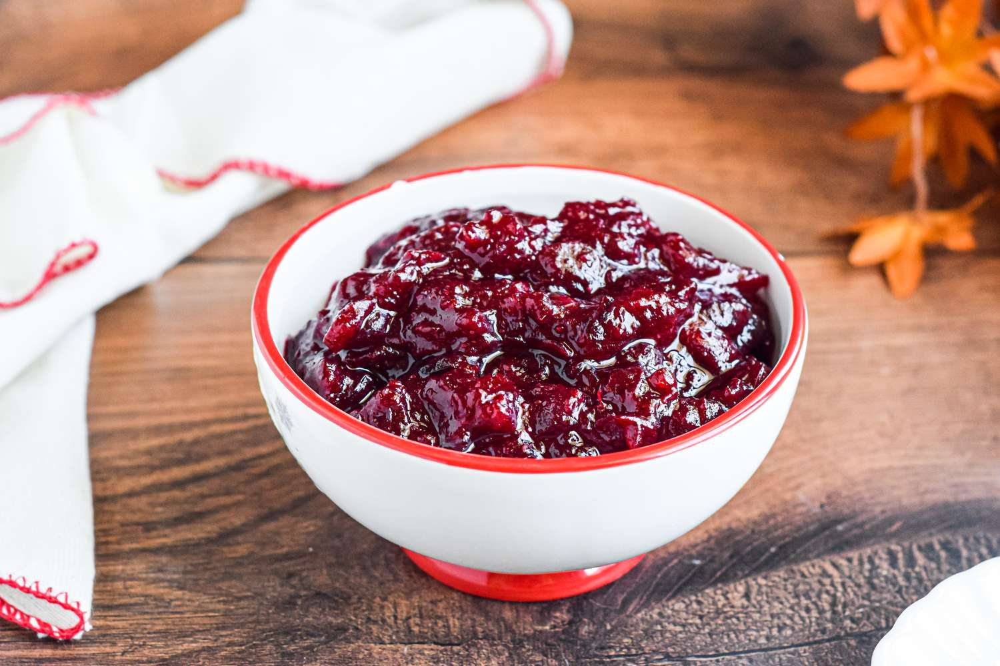

The Perfect Cranberry Sauce

Description Of Cranberry Sauce
This has been a 'trade secret' for years, but it's so good I decided to share it!
Ingredients
- 1 cup water
- 1 cup white sugar
- 1 package fresh cranberries
- 1 orange, peeled and pureed
- 1 apple, peeled, cored and diced
- 1 pear, peeled, cored and diced
- 1 cup chopped dried mix fruit
- 1 teaspoon ground cinnamon
- 1/2 teaspoon ground nutmeg
Steps
- In a medium saucepan, boil water and sugar until the sugar dissolves
- Reduce the heat to simmer, and stir in all the ingredients
- Cover, and simmer for 30 minutes, stirring occasionally, until the cranberries burst
- Remove from heat, and let cool to room temperature.